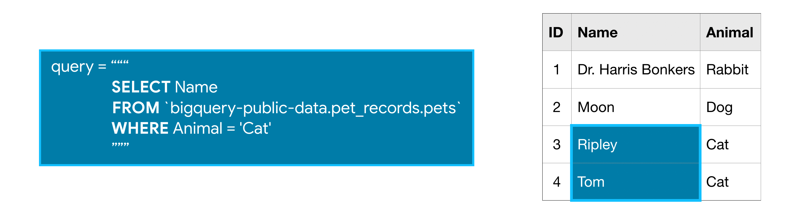

Introducción
Ahora que sabe cómo acceder y examinar un conjunto de datos, ¡está listo para escribir su primera consulta SQL! Como pronto verá, las consultas SQL lo ayudarán a clasificar un conjunto de datos masivo, para recuperar solo la información que necesita.
Comenzaremos usando las palabras clave SELECT, FROM y WHERE para obtener datos de columnas específicas según las condiciones que especifique.
Para mayor claridad, trabajaremos con un pequeño conjunto de datos imaginario pet_records que contiene solo una tabla, llamada mascotas pets.
| ID | Name | Animal |
|---|---|---|
| 1 | Dr. Harris | Rabbit |
| 2 | Moon | Dog |
| 3 | Ripley | Cat |
| 4 | Tom | Cat |
SELECT….FROM
La consulta SQL más básica selecciona una sola columna de una sola tabla. Para hacer esto,
- especifique la columna que desea después de la palabra SELECT, y luego
- especifique la tabla después de la palabra FROM. Por ejemplo, para seleccionar la columna Name (de la tabla de mascotas pets en la base de datos pet_records en el proyecto bigquery-public-data), nuestra consulta aparecerá de la siguiente manera:

Tenga en cuenta que al escribir una consulta SQL, el argumento que pasamos a FROM no está entre comillas simples o dobles (‘o “). Está en comillas invertidas (`).
WHERE … Los conjuntos de datos de BigQuery son grandes, por lo que generalmente querrá devolver solo las filas que cumplan condiciones específicas. Puede hacerlo utilizando la cláusula WHERE.
La consulta a continuación devuelve las entradas de la columna Nombre Name que están en filas donde la columna Animal tiene el texto ‘Cat’.

Ejemplo: ¿Cuáles son todas las ciudades de EE. UU. En el conjunto de datos OpenAQ? Ahora que ya tiene lo básico, veamos un ejemplo con un conjunto de datos real. Utilizaremos un conjunto de datos OpenAQ sobre la calidad del aire.
Primero, configuraremos todo lo que necesitamos para ejecutar consultas y echar un vistazo rápido a las tablas que hay en nuestra base de datos.
from google.cloud import bigquery
# Create a "Client" object
client = bigquery.Client()
# Construct a reference to the "openaq" dataset
dataset_ref = client.dataset("openaq", project="bigquery-public-data")
# API request - fetch the dataset
dataset = client.get_dataset(dataset_ref)
# List all the tables in the "openaq" dataset
tables = list(client.list_tables(dataset))
# Print names of all tables in the dataset (there's only one!)
for table in tables:
print(table.table_id)
El conjunto de datos contiene solo una tabla, llamada global_air_quality. Buscaremos la tabla y echaremos un vistazo a las primeras filas para ver qué tipo de datos contiene.
# Construct a reference to the "global_air_quality" table
table_ref = dataset_ref.table("global_air_quality")
# API request - fetch the table
table = client.get_table(table_ref)
# Preview the first five lines of the "global_air_quality" table
client.list_rows(table, max_results=5).to_dataframe()
¡Todo se ve bien! Entonces, hagamos una consulta. Supongamos que queremos seleccionar todos los valores de la columna de la ciudad city que están en filas donde la columna del país country es ‘US’ (Para “Estados Unidos”).
# Query to select all the items from the "city" column where the "country" column is 'US'
query = """
SELECT city
FROM `bigquery-public-data.openaq.global_air_quality`
WHERE country = 'US'
"""
Tómese el tiempo ahora para asegurarse de que esta consulta se alinee con lo que aprendió anteriormente.
Enviando la consulta al conjunto de datos¶
Estamos listos para usar esta consulta para obtener información del conjunto de datos OpenAQ. Como en el tutorial anterior, el primer paso es crear un objeto Client.
# Create a "Client" object
client = bigquery.Client()
Comenzamos configurando la consulta con el método query(). Ejecutamos el método con los parámetros predeterminados, pero este método también nos permite especificar configuraciones más complicadas sobre las que puede leer en la documentación. Volveremos sobre esto más tarde.
# Set up the query
query_job = client.query(query)
A continuación, ejecutamos la consulta y convertimos los resultados en un DataFrame de pandas.
# API request - run the query, and return a pandas DataFrame
us_cities = query_job.to_dataframe()
Ahora tenemos un DataFrame de pandas llamado us_cities, que podemos usar como cualquier otro DataFrame.
# What five cities have the most measurements?
us_cities.city.value_counts().head()